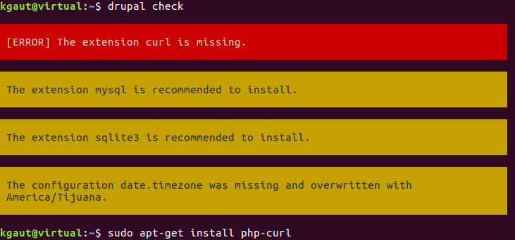
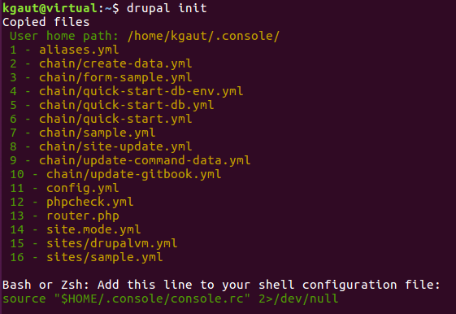

Drupal Console
Drupal Camp Nantes - 11 Juin 2016
$ whois
Kevin Gautreau
- Développeur web freelance
Annecy=> Clermont-Ferrand- PHP / Spécialisé drupal
- Github / Twitter : @kgaut
- Site : https://kgaut.net
Plan
- Drupal 7 - c'était pas si mal
- Drupal 8 - qu'est-ce qui change ?
Drupal 7
Finalement c'était pas si mal
Un module Drupal 7
mon_module.info
mon_module.module
*.module trop long ?
mon_module.info
files[] = mon_module.front.inc
mon_module.front.inc
mon_module_HOOK() {
...
}
Un poil de POO ?
mon_module.info
files[] = maclasse.class.inc
maclasse.class.inc
class MaClass {
...
}
Des outils
Module builder, associé à drush
drush @alias mb mon_module --write- Gestion des dépendances
- Pré-configuration de hook
- ...
Mais au final...
- Création à la main
- copier/coller depuis d'autres modules
Drupal 8, qu'est ce qui change ?
Spoiler : tout
Enfin presque...
mon_module.info.yml
mon_module.module
Mais quand même
Norme PSR2 => impose une architecture
mon_module/
src/
Controller/
MonModule.php
Entity/
Controller/
Form/
Form/
Plugin/
Test/
mon_module.info.yml
mon_module.libraries.yml
mon_module.service.yml
mon_module.module
Bref...
C'est verbeux...
Heureusement !
Drupal Console
Drupal Console
Qu'est-ce que Drupal Console
Portage de la console Symfony pour Drupal
Un outil en ligne de commande pour assister le développement sous Drupal 8
- Accélerer le développement de module
- Interagir avec une installation de Drupal 8
- Débugguer une installation de Drupal 8
Accélerer le développement
- Génération de la structure d'un module
- Génération d'un type d'entité
- Génération de formulaire
- Génération de blocks
- Génération de ...
Intéragir avec une instance D8
- Téléchargement de modules
- Lecture / Ecriture de la config
Mais encore ?
- Scripts chaînés
Successeur de Drush ?
Pour l'instant non.
À terme ? fusion ?
Let's get started

Installation
GNU/Linux & MacOS
curl https://drupalconsole.com/installer -L -o drupal.phar
sudo mv drupal.phar /usr/local/bin/drupal
sudo chmod +x /usr/local/bin/drupal
Installation
Windows
Dans le dossier des binaires de php :
php -r "readfile('https://drupalconsole.com/installer');" > drupal.phar
Premier test
drupal check
Si tout va bien, c'est bien
Sinon, affichage des extensions php manquantes (php-curl entre autres)
Génération des fichiers de config
drupal init
Note : Ajouter --override pour les re-générer
Démo Kickstart Drupal 8
drupal chain --file=~/.console/chain/quick-start.yml
Commande chainée :
- Téléchargement dernière version drupal
- Installation
- Lancement du serveur interne PHP
Démo Kickstart Configuré
drupal chain --file=~/.console/chain/quick-start-custom.yml
Générons des trucs !
Génération de modules
drupal generate:module